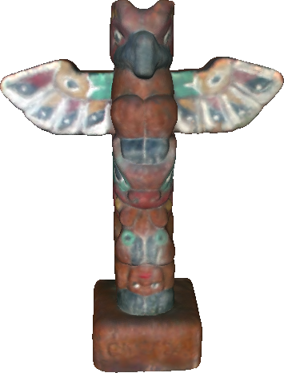
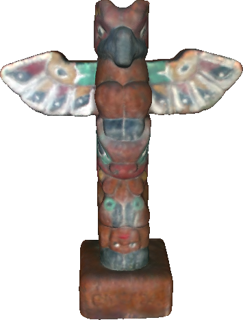

|
||||
|  |
|
|
||||
|  |
We provide here a 3D colored mesh database associated to the reference :
Anass Nouri, Christophe Charrier, Olivier Lézoray - Greyc 3D Colored Mesh Database, Technical report, 2017. https://hal.archives-ouvertes.fr/hal-01441721
15 real objects with different colors, geometries and textures were acquired using the NextEngine 3D color laser scanner. We have applied several distorsions to the obtained meshes according to different strengths and situations (on rough or smooth areas), leading to a corpus containing 425 meshes in sum. The provided 3D meshes are in the .PLY format. Each vertex of a mesh is represented by 3 coordinates that describe its position and 3 others that re ect its colors (RGB values).
This work received funding from the Agence Nationale de la Recherche, ANR-14-CE27-0001 GRAPHSIP and from the European Union FEDER/FSE 2014/2020 (GRAPHSIP project).